Serial 'Radin' pour ton EC2 connecté à RDS !! 🚀
03 Juin 2025, 09:11 CEST
Devops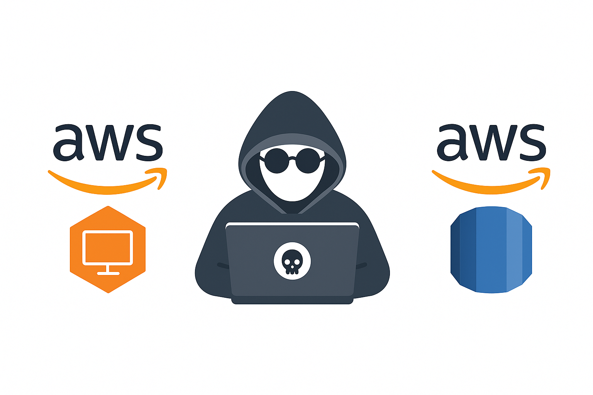
Créer une application full-stack complète sur AWS avec un budget maîtrisé
Bienvenue dans notre série sur l’optimisation des coûts AWS ! Dans l’article précédent, nous avons mis en place une base de données MySQL RDS optimisée via Terraform. Aujourd’hui, on passe à la vitesse supérieure : connecter une vraie application à cette infrastructure. À la fin, tu auras une application full-stack prête pour la production, reposant sur les bonnes pratiques AWS… et sans faire exploser ton budget.
🎯 Ce que tu vas construire
Un déploiement sécurisé, scalable et optimisé, avec :
✅ Une application Web Full-Stack ( version minimalistes )
- Frontend HTML/CSS/JavaScript réactif
- Backend Node.js avec API REST et gestion des erreurs
- Gestion de tâches en temps réel (ajouter, compléter, supprimer)
✅ Une infrastructure Cloud AWS
- RDS MySQL (Multi-AZ, chiffrée,
db.t4g.microéconome) - EC2 (
t2.micro) hébergeant l’application - VPC avec sous-réseau public et groupes de sécurité
- Entièrement pilotée via Terraform
✅ Des bonnes pratiques de production
- Configuration via fichiers
.env - Supervision des processus avec PM2
- Versioning avec Git
- Accès sécurisé en SSH et à la base de données
- Infrastructure minimale mais robuste
✅ Une vraie optimisation des coûts
- EC2 dans la Free Tier
- RDS à consommation réduite
- Aucun NAT Gateway (zéro frais inutiles)
- Support Multi-AZ intégré
Étape 1 : Forquer l'application 🍴
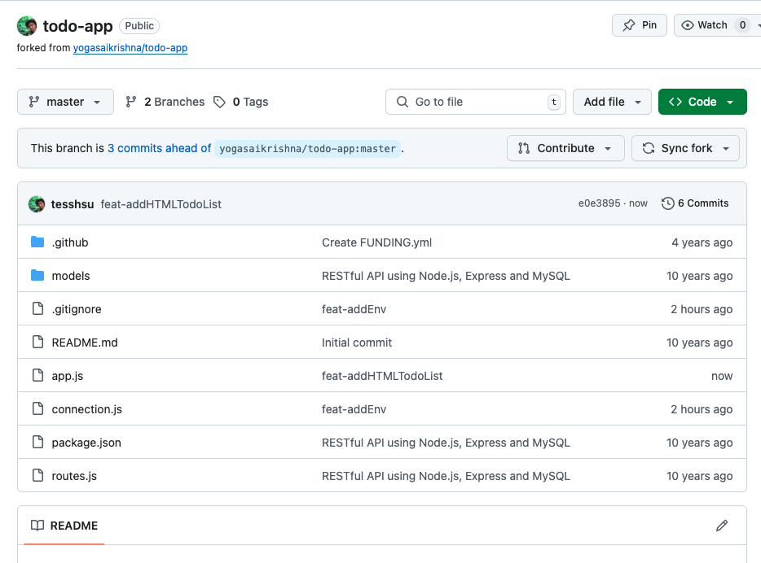
On commence avec un fork de la todo app de yogasaikrishna.
Pourquoi forker plutôt que cloner ?
- Pour avoir le contrôle sur le code
- Ajouter facilement un support de configuration
.env - Suivre les changements liés à l’intégration AWS
- Et éventuellement contribuer à l’original 😉
👉 Fork réalisé vers : <Ton dépôt GitHub>
👉 Branche créée : feat-addEnv
Étape 2 : Mise en place de l’infra avec Terraform 🏗️
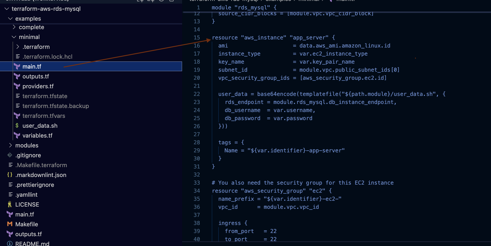
On ajoute une instance EC2 dans le main.tf :
# Instance EC2
resource "aws_instance" "app server" {
ami = data.aws_ami.amazon_linux.id
instance_type = var.ec2_instance_type
key_name = var.key_pair_name
subnet_id = module.vpc.public_subnet_ids[0]
vpc_security_group_ids = [aws_security_group.ec2.id]
user_data = base64encode(templatefile("${path.module}/user_data.sh", {
rds_endpoint = module.rds_mysql.db_instance_endpoint,
db_username = var.username,
db_password = var.password
}))
tags = {
Name = "${var.identifier}-app-server"
}
}
Et on définit un groupe de sécurité :
resource "aws_security_group" "ec2" {
name_prefix = "${var.identifier}-ec2-"
vpc_id = module.vpc.vpc_id
ingress {
from_port = 22
to_port = 22
protocol = "tcp"
cidr_blocks = ["0.0.0.0/0"]
}
ingress {
from_port = 80
to_port = 80
protocol = "tcp"
cidr_blocks = ["0.0.0.0/0"]
}
ingress {
from_port = 8000
to_port = 8000
protocol = "tcp"
cidr_blocks = ["0.0.0.0/0"]
}
egress {
from_port = 0
to_port = 0
protocol = "-1"
cidr_blocks = ["0.0.0.0/0"]
}
tags = {
Name = "${var.identifier}-ec2-sg"
}
}
Pour consulter le changement complet du code, vous pouvez retrouver le commit ici :
Puis, une fois le code Terraform correctement ajouté, exécutez terraform plan et
terraform apply pour déployer l'EC2.
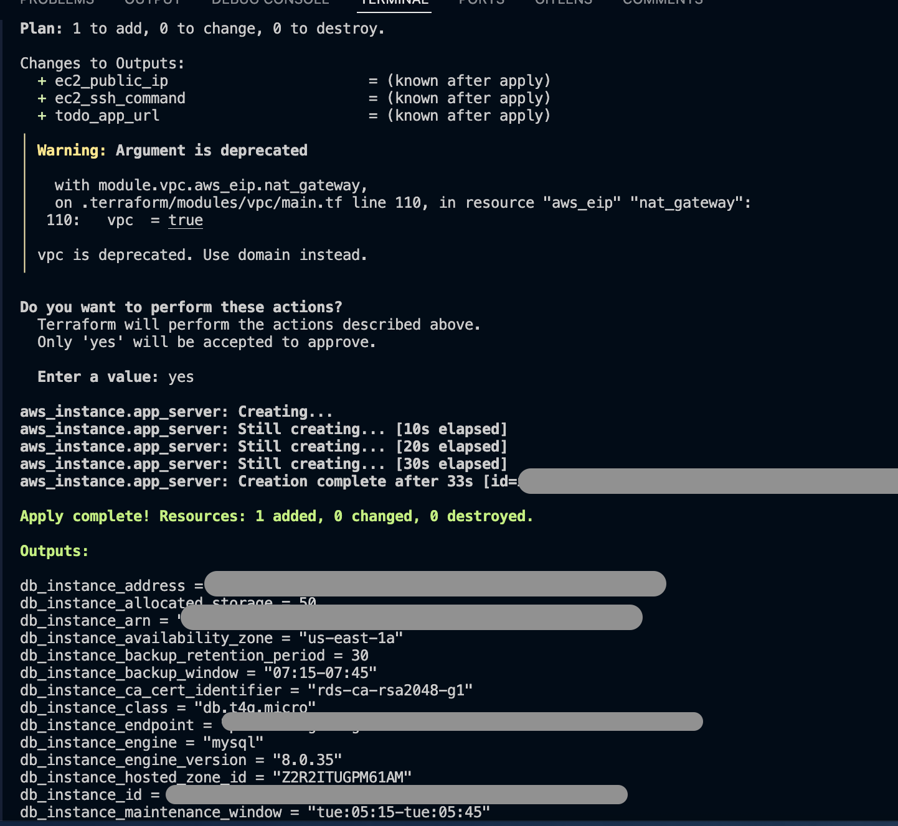
Vous pouvez également accéder au tableau de bord EC2 pour vérifier votre instance récemment créée avec Terraform. Vous y trouverez les détails importants tels que les métadonnées et l’adresse IPv4 publique. Ces informations seront indispensables une fois votre application TODO lancée et accessible sur EC2.
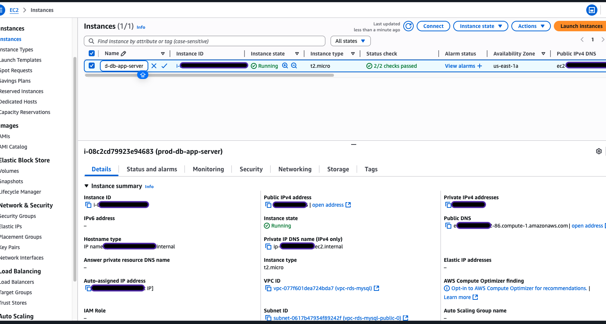
Voici une autre astuce pour vérifier si votre RDS est bien connecté à votre instance EC2 : rendez-vous dans le groupe de règles de sécurité (Security Group) de votre RDS, puis consultez la section des règles entrantes (Inbound rules) où figure le CIDR/IP autorisé. Vérifiez que le nom et l’ID du Security Group correspondent bien à ceux du Security Group de votre instance EC2. Si c’est le cas, félicitations : vous avez correctement configuré la connexion entre votre instance EC2 et votre RDS via Terraform. (Voir capture d’écran ci-dessous.)
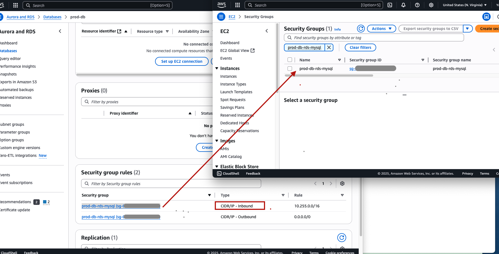
Étape 3 : Gestion des clés SSH 🔑
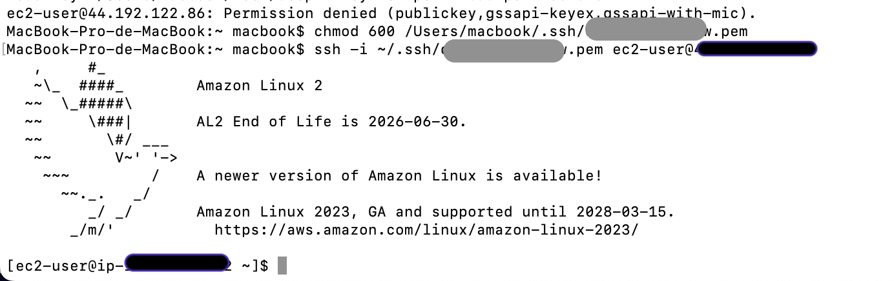
Dès que l'EC2 est déployé, vous pouvez aller sur le tableau de bord EC2, puis créer une clé.
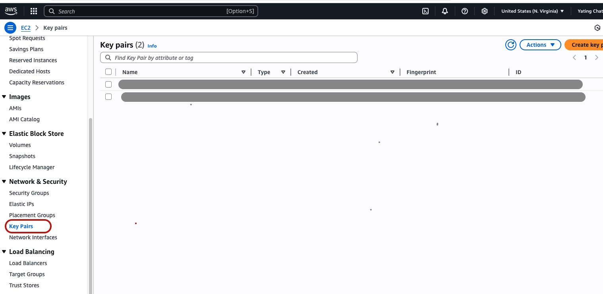
Crée et utilise une nouvelle clé SSH pour connecté au serveur EC2:
chmod 600 ~/.ssh/<nom-de-ta-cle>.pem
ssh -i ~/.ssh/<nom-de-ta-cle>.pem ec2-user@<Adresse-IP-Publique-EC2>
✅ Astuce : Sauvegarde bien ta clé privée, AWS ne pourra pas te la redonner.
Étape 4 : Configuration du serveur EC2 🛠️
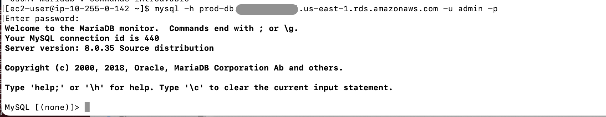
Installer Node.js et PM2 sur Amazon Linux 2 :
# Installer NVM + Node.js
curl -o- https://raw.githubusercontent.com/nvm-sh/nvm/v0.34.0/install.sh | bash
. ~/.nvm/nvm.sh
nvm install 16
# Installer PM2
npm install -g pm2
✅ Node : v16.20.2
✅ PM2 : installé globalement
Tester la connexion RDS
mysql -h <Endpoint-RDS> -u <Utilisateur-DB> -p
CREATE DATABASE todos;
USE todos;
CREATE TABLE todo_list (
id INT AUTO_INCREMENT PRIMARY KEY,
task VARCHAR(255) NOT NULL,
status BOOLEAN DEFAULT FALSE
);
Vous pouvez aussi tout simplement lancer le script Bash directement depuis le terminal de votre EC2. Voici un exemple de code disponible sur GitHub : user_data.sh
Une fois l'application TODO correctement installée et la première table todo créée,
vous pouvez déjà aller dans AWS RDS puis dans CloudWatch pour
consulter les logs.
Vérifiez notamment les connexions à la base de données (DatabaseConnections) afin de
vous assurer que tout fonctionne correctement.
Voir la capture d’écran ci-dessous.
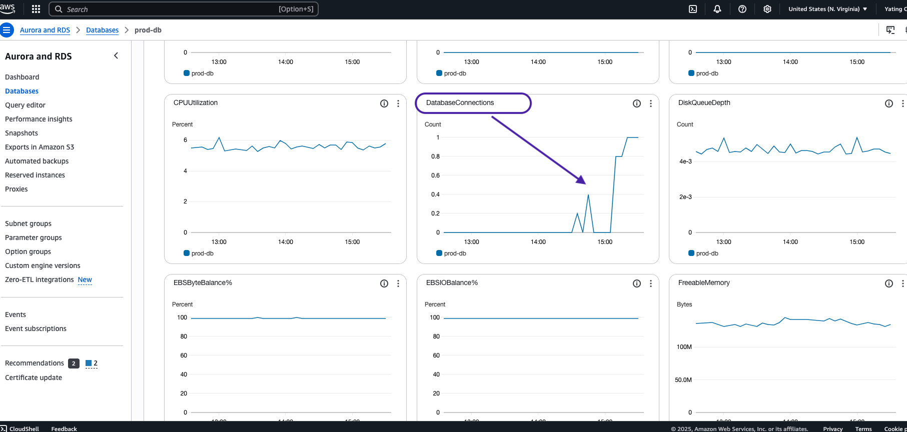
Étape 6 :lancer avec PM2 🎨
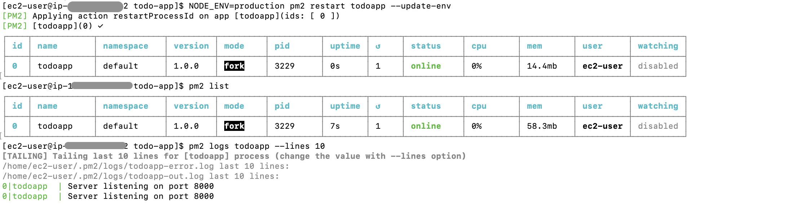
Et lance avec PM2 :
NODE_ENV=production pm2 start app.js --name "todoapp"
pm2 list
pm2 logs todoapp
pm2 save
pm2 startup
Une fois le serveur application lancé, vous verrez dans les logs le démarrage de
l’application Todo. Ensuite, rendez-vous sur l’adresse publique de votre instance EC2 en ajoutant le
port :8000 à l’URL. Vous pourrez ainsi accéder à votre application en fonctionnement.
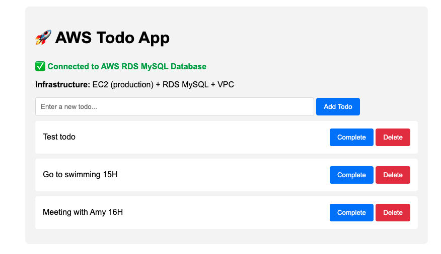
Bonus : ENI, c’est quoi ce truc ? 🌐
Les interfaces réseau élastiques (ENI) jouent un rôle clé en liant les instances RDS et EC2 au sein de votre VPC. Lorsqu’une instance RDS est créée via Infrastructure as Code (IaC), AWS génère automatiquement une ENI associée à cette instance. Cette ENI agit comme un point d’attache réseau virtuel, permettant la communication sécurisée entre les services AWS et votre instance RDS. Elle garantit que le trafic réseau entre votre EC2 et la base de données passe par un canal dédié et isolé dans votre infrastructure cloud. Sans cette interface réseau, la connexion entre vos ressources AWS ne serait pas possible ou sécurisée.
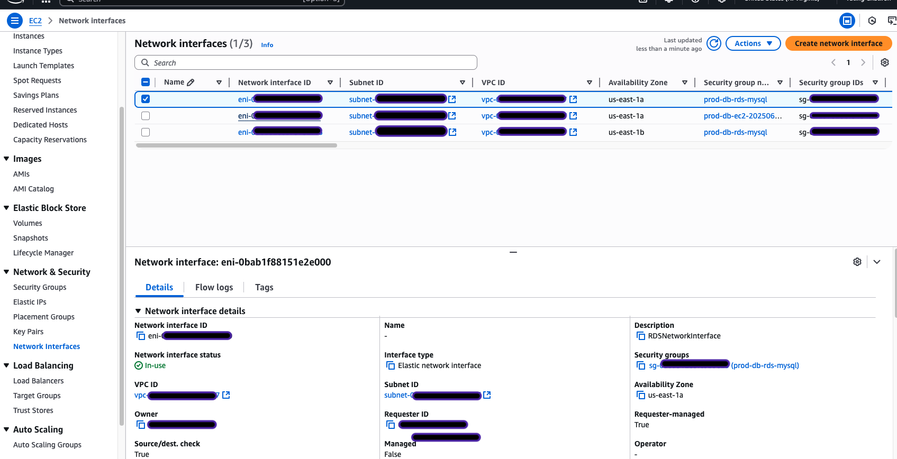
| Type d’ENI | Zone de dispo | Rôle |
|---|---|---|
| ENI primaire | eu-west-1a | Endpoint principal RDS |
| ENI de secours | eu-west-1b | Basculer en Multi-AZ |
Cette Resource Map révèle l'infrastructure VPC qui accueille nos ENI RDS. Les deux subnets dans des Availability Zones distinctes (us-east-1a et us-east-1b) expliquent pourquoi AWS crée automatiquement deux ENI : une pour l'instance RDS principale et une pour le standby Multi-AZ. Les route tables orchestrent le routage du trafic vers ces interfaces réseau virtuelles.
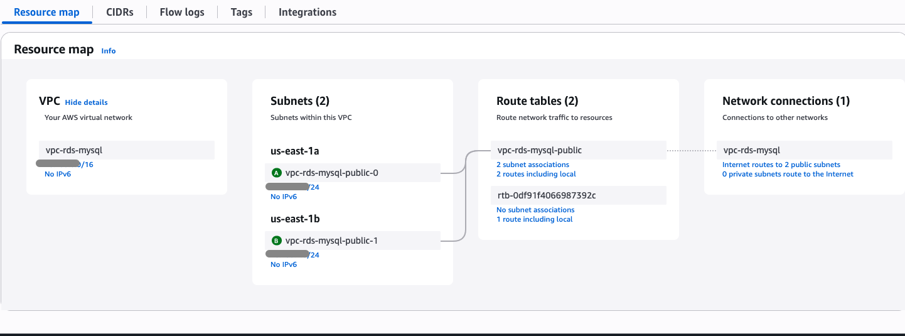
Groupes de sécurité : Ingress vs Egress
| Terme | Direction | Métaphore |
|---|---|---|
| Ingress | Entrée | Quelqu’un frappe à ta porte |
| Egress | Sortie | Tu sors de chez toi |
Exemple :
resource "aws_security_group" "app" {
ingress {
from_port = 8000
to_port = 8000
protocol = "tcp"
cidr_blocks = ["0.0.0.0/0"]
}
egress {
from_port = 443
to_port = 443
protocol = "tcp"
cidr_blocks = ["0.0.0.0/0"]
}
}
💰 Optimisation des coûts
Ressources
| Ressource | Type | Coût estimé |
|---|---|---|
| EC2 | t2.micro | ~0 € (Free Tier) |
| RDS | db.t4g.micro | ~12 €/mois |
Économies
- Pas de NAT Gateway (économie de ~45 €/mois)
- Multi-AZ sans coût caché
- CloudWatch inclus
Total (année 1) : ~12 €/mois
Après Free Tier : ~20–25 €/mois
🎉 Démo finale
- API REST
- Connexion sécurisée à RDS
- Process géré automatiquement
- Infra 100 % Terraform
Test API en ligne de commande :
curl http://<Adresse-IP-Publique-EC2>:8000/todo/
curl -X POST -H "Content-Type: application/json" \
-d '{"task":"Apprendre AWS","status":false}' \
http://<Adresse-IP-Publique-EC2>:8000/todo/
📚 À retenir
Infra as Code
- 100 % reproductible avec
terraform apply - Versionnée avec Git
- Configurations spécifiques à l’environnement
Bonnes pratiques
- Groupes de sécurité minimalistes
- VPC isolé et bien cloisonné
- Supervision via CloudWatch
- PM2 pour la résilience
Attention : même après toutes les optimisations décrites dans cette série, il reste toujours des leviers supplémentaires à activer en fonction de votre projet, de la taille de votre code-base et du trafic attendu.
-
Si votre dépôt dépasse 100 Go, réduisez encore la bande passante :
stockez une
archive ZIP de l’application sur Amazon S3, puis
décompressez-la lors
du déploiement. Vous éliminez ainsi les
git clonerépétitifs et quasiment tous les coûts de transfert. - Pour une industrialisation complète, adoptez Ansible : un playbook peut installer automatiquement les dépendances (MySQL, Node.js, npm, etc.), centraliser la configuration et rendre le processus réutilisable pour vos prochains projets.